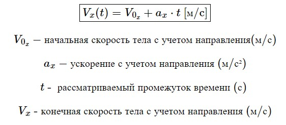

Теоретический минимум за 7 класс
2-e полугодие
Равномерное движение
1. Средняя скорость

2. Средняя путевая скорость
3. Зависимость координат от времени при равномерном прямолинейном движении
Равноускоренное движение
4. Ускорение
5. Зависимость координат от времени при равноускоренном движении
6. Перемещение при равносукоренном движении (три формулы)
Первая формула
Вторая
Третья
7. Зависимость скорости от времени при равноускоренном движении

Динамика
8. Первый закон Ньютона (формулировка)
"Cуществует системы отсчëта, в которых тело покоится или движется равномерно прямолинейно при отсутствии действия на него сил. Такие системы называются инерциальными."
9. Второй закон Ньютона
10. Третий закон Ньютона (рисунок)
11. Закон гравитационного взаимодействия (без векторов)
12. Сила тяжести
13. Сила упругости
14. Сила трения скольжения
15. Архимедова сила
Статика
16. Момент силы
17. Условия равновесия протяжённого твёрдого тела

18. Коэффициент полезного действия
19. Давление
20. Плотность
21. Средняя плотность
22. Гидростатическое давление
23. Закон Паскаля (формулировка)

24. Закон гидравлического пресса

25. Условие плавания тел

Законы сохранения
26. Механическая работа

27. Мощность

28. Кинетическая энергия

29. Потенциальная энергия тела вблизи поверхности земли

30. Потенциальная энергия сжатой пружины
31. Связь между работой и энергией